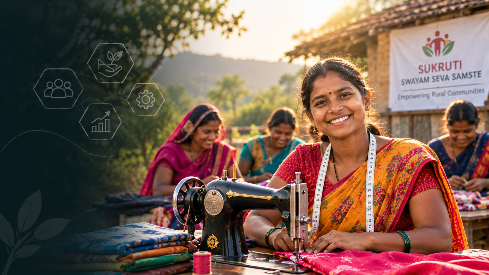
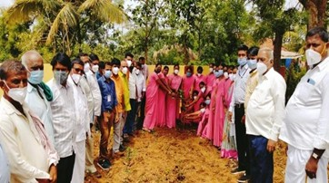
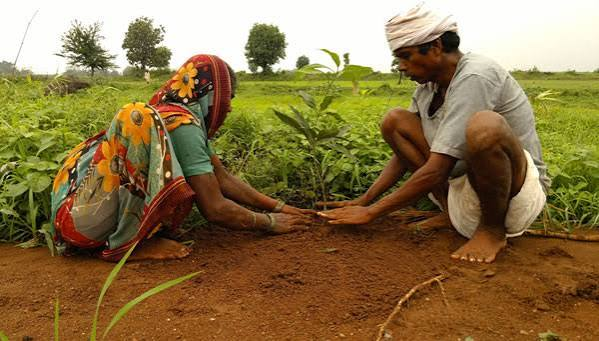
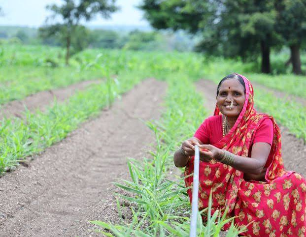
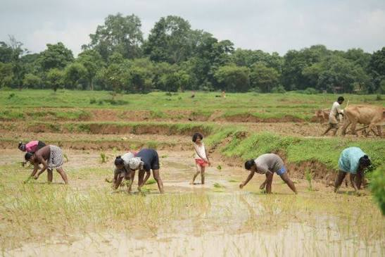

Strengthening Rural Livelihoods
Supporting livestock development, animal health, environmental awareness and sustainable community initiatives.
Animal Health Checkup Camps
Under the guidance of Dr. Mukandappa, several livelihood promotion activities have been carried out by Sukruti.

Animal Health Checkup Camps
Under the guidance of Dr. Mukandappa, several livelihood promotion activities have been carried out by Sukruti. One of the major efforts was organizing successful animal health camps from April 2019 to March 2020.
These camps included animal breed improvement programs across three districts. The initiative aimed to enhance the health, productivity, and sustainability of livestock rearing.
Livelihood Program Impact

Environment Protection Awareness and Plantation Program
The importance of protecting the environment was realized by people of three villages across three taluks with the help of awareness programs conducted by the organization.
Each program was successful in bringing serious changes in the minds of people towards environmental protection.
At the end of each program, participants including children took part in planting trees, promoting greenery and sustainability within their communities.
Livelihood Gallery
Moments from Sukruti's livelihood, animal health and environmental awareness initiatives.


Supporting Sustainable Rural Communities
Support initiatives that strengthen animal health, livelihood opportunities and environmental awareness in rural communities.
Donate Now